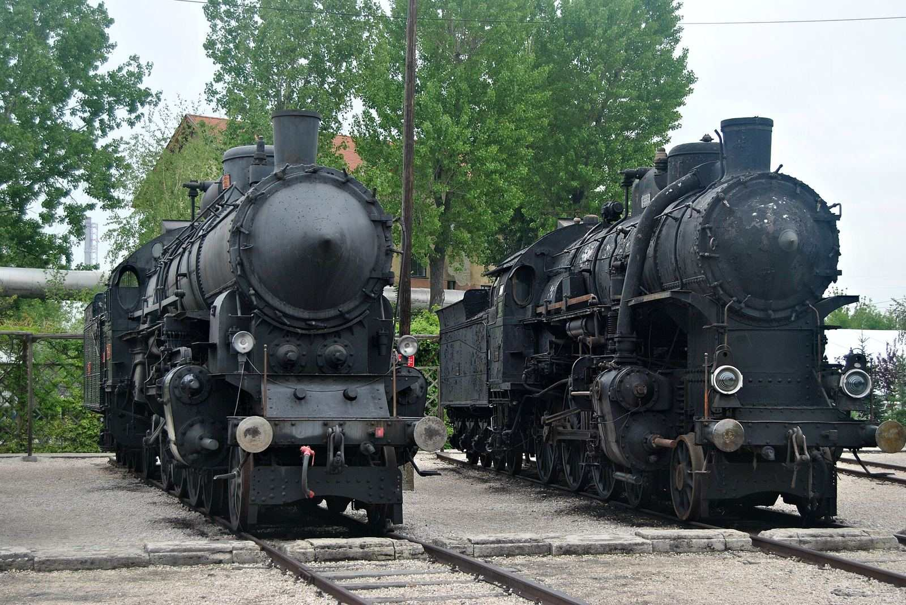

Conferences · Tech
Craft Conference 2027
- Dates
- –
- Venue
- Hungarian Railway Museum (Magyar Vasúttörténeti Park), Tatai u. 95, 1142 Budapest
- Location
- Budapest, Hungary
- Format
- Hybrid
- Category
- Tech
- Industry
- Tech
- Organiser
- CraftHub
- Official website
- https://craft-conf.com/2027/
About
Dates are local to the host city (Central European Time, UTC+1 / UTC+2 in summer).
Topics: software engineering, architecture, AI-assisted engineering.
No organiser attendance figure found on the official pages fetched 24 Nov 2026. Ranked by our estimated size tier 'small' (under 10,000 attendees/visits), a judgement from format, venue and scale, not an official number.
Sources
- Official — https://craft-conf.com/2027/